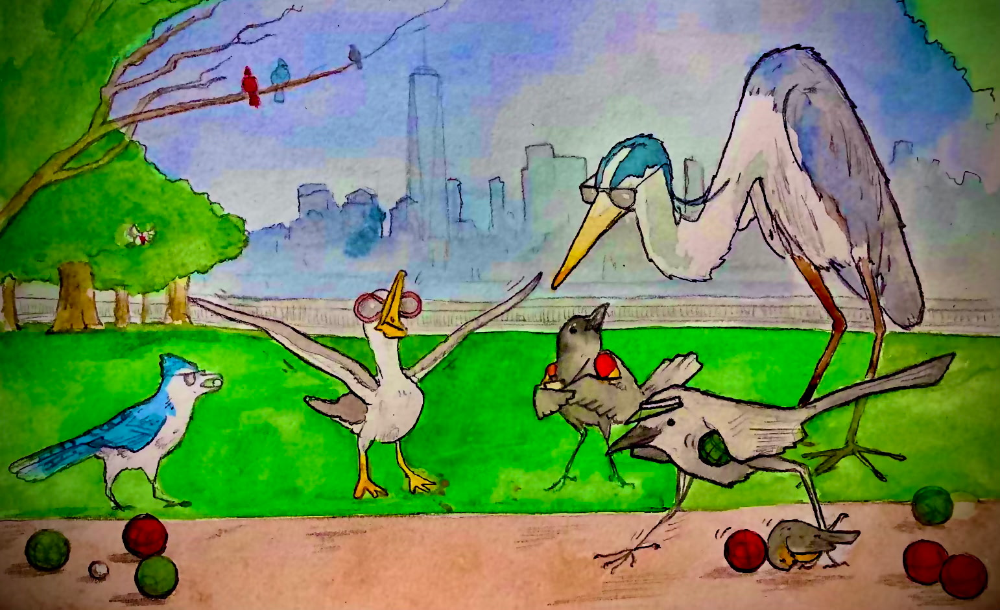

Start Small
Start with City owned lots on the Palisades cliffs, specifically underneath Riverview Park.

This is a project to help fund and organize habitat restoration on the Lower Palisades. The Lower Palisades is the portion of the NJ Palisades that are South of the George Washington Bridge.
Scroll ↓Mission
The “Lower Palisades” area starts a half mile South of the George Washington Bridge and goes all way to Jersey City. This area also contributes significantly to the tree canopy in this dense urban area. There is currently no environmental management. This area is cut up into a mix small private and municipal lots.
More than the Palisades Interstate Park. The 12-mile section of the cliffs contained in the Palisades Interstate Park is roughly in the middle of the entire ridgeline. The Palisades Sill spans more than 40 miles, from Staten Island to Haverstraw, New York.
The Heights contains the majority of Palisades ridgeline natural areas. There are also natural areas on the western side of the Heights near 1&9.
40+
Miles of Palisades Sill, from Staten Island to Haverstraw, New York
400
Acres across Hudson and Bergen Counties
100
Acres in Jersey City alone
0
Environmental management currently in place
Background & History
From the breakup of Pangaea to the conservation campaign that saved the cliffs from the quarries.

As Pangaea broke apart, magma rose and cooled forming a sill of hard diabase beneath overlying layers of softer rock.
The glaciers of the Ice Age helped shape the eastern edge of the sill into the cliffs we see today, scouring away the loose rock around them.
The Lenape people who inhabited the area called them Wee-Awk-En meaning “Rocks that look like trees.”
Colonists started calling the cliffs The Palisades because they closely resembled the defensive wooden stake walls, which they called palisades, built around forts at the time.
The Palisades were nearly destroyed by quarrying in the late 1800s. Large sections of the cliffs were being blasted for construction stone, prompting widespread concern that the iconic landscape would be lost.
A grassroots conservation campaign saved the cliffs. The New Jersey State Federation of Women's Clubs spearheaded a public preservation movement that resulted in the creation of the Palisades Interstate Park Commission in 1900.
The Palisades became a pioneering conservation success. With support from New Jersey, New York, and donors such as financier J. P. Morgan, quarry lands were acquired and protected, creating America's first major bi-state park system.
Conservation continues today in Bergen and Rockland Counties. The Palisades Interstate Park Commission still manages the land as well as the Palisades Nature Association which manages the Greenbrook Sanctuary.


Despite heavy urbanization, the Lower Palisades remain a vital wildlife corridor supporting a surprising diversity of species.


Goals & Initiatives
Tree of Heaven, Kudzu, Japanese Knotweed, English Ivy, Norway Maple
Just topping plants when they block visibility of roadways and skylines.
Dumping and encampments in difficult areas to clean.


Start with City owned lots on the Palisades cliffs, specifically underneath Riverview Park.
Create a master plan for environmental management on the Lower Palisades which follows habitat restoration best practices for urban natural areas. Find funding for fixing invasive plant and trash issues. Collaborate with local orgs such as PRISM and NYRP.
There's already the Jersey City Palisades Preservation Overlay District (PPOD) ordinance as well as the proposed state-level Palisades Cliffs Protection and Planning Act in the works. Both currently only focuses on protecting skyline views and not the cliff ecosystem.
News
Join us for a native bird count session in cooperation with local bird watching groups. Bring binoculars and a love of birds! All experience levels welcome.
More information about the project can be found in the video. The presentation is roughly the first 22 minutes.
Background on how the cliffs were nearly lost to quarrying — and the campaign that saved them.
More information about the project can be found in the video below. The presentation is roughly the first 22 minutes.
Events
🕔 6:00 PM 📍 Bocce Court, Jersey City Heights, NJ
Join us for a native bird count session in cooperation with local bird watching groups. Bring binoculars and a love of birds! All experience levels welcome.
Personnel

Community Conservationist — jasonbiegel.com
Resident of Jersey City Heights since 2012
Join
Sign up to get emails about updates on the project and opportunities to get involved.
Or email us directly: info@lowerpalisades.org

Donate
This is a project to help fund and organize habitat restoration on the Lower Palisades. Contributions go toward fixing invasive plant and trash issues and building a master plan for environmental management.
Partners
Collaborate with local orgs such as PRISM and NYRP.
Contact
Hudson & Bergen Counties, New Jersey
Jersey City Environmental Commission
June 16, 2026
Socials & Blog
Follow along
Resources & Further Reading